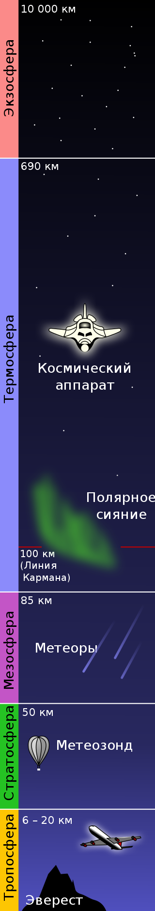
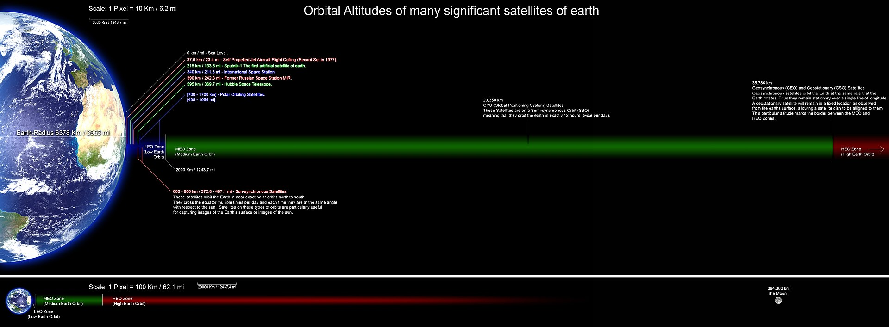

Косми́ческое простра́нство, ко́смос (др.-греч. κόσμος «мир», «Вселенная») — относительно пустые участки Вселенной, которые лежат вне границ атмосфер небесных тел. Вопреки распространённым представлениям, космос не является абсолютно пустым пространством: в нём есть, хотя и с очень низкой плотностью, межзвёздное вещество (преимущественно молекулы водорода), кислород в малых количествах (остаток после взрыва звезды), космические лучи и электромагнитное излучение, а также гипотетическая тёмная материя.
Пространство в Солнечной системе называют межпланетным пространством, которое переходит в межзвёздное пространство в точках гелиопаузы солнцестояния. Вакуум космоса на самом деле не является абсолютным — в нём присутствуют атомы и молекулы, обнаруженные с помощью микроволновой спектроскопии, реликтовое излучение, которое осталось от Большого взрыва, и космические лучи, в которых содержатся ионизированные атомные ядра и разные субатомные частицы. Также есть газ, плазма, пыль, небольшие метеоры и космический мусор (материалы, которые остались от деятельности человека на орбите). Отсутствие воздуха делает космическое пространство (и поверхность Луны) идеальными участками для астрономических наблюдений на всех длинах волн электромагнитного спектра. Доказательством этого являются фотографии, полученные при помощи космического телескопа Хаббл. Кроме того, бесценную информацию о планетах, астероидах и кометах Солнечной системы получают с помощью космических аппаратов.

